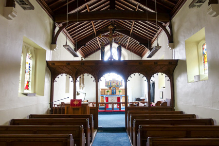
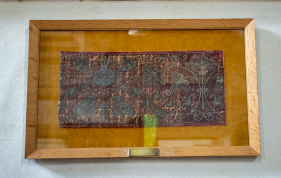
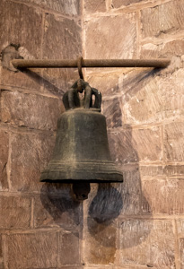
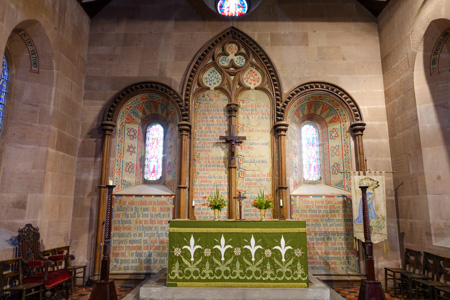
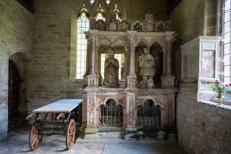

5. Tudor Britain (1485 AD to 1603 AD)

Tudor Britain was defined by the English Reformation and the Dissolution of the Monasteries which was started by Henry VIII and concluded by Elizabeth I in the Elizabethan Religious Settlement, this laid the foundation for Anglicanism…
The founder of the House of Tudor was Henry VII, who became King of England by defeating King Richard III at the Battle of Bosworth Field (the culmination of the Wars of the Roses). The other sovereigns of the House of Tudor were: Henry VIII, Edward VI, Mary I, and Elizabeth I.
- Henry VII: 1485-1509
- Henry VIII: 1509-1547
- Edward VI: 1547-1553
- Mary I: 1553-1558
- Elizabeth I: 1558-1603
The monarchs had different approaches to the religious turmoil of the time, with Henry VIII replacing the Pope as the head of the Church of England but maintaining Catholic doctrines, Edward VI imposing a very strict Protestantism, Mary I attempting to reinstate Catholicism, and Elizabeth I arriving at a compromise position that defined the "not-quite" Protestant Church of England that persists today.
Henry VII 1485-1509
Throughout the reign of Henry VII the Catholic Church remained an integral part of the fabric of every community.

The Last Supper
Leonardo da Vinci paints The Last Supper from 1495-1498.
The Creation of Adam
Michelangelo paints The Creation of Adam from 1508–1512.
Rood Screen
In medieval churches, the rood screen was a decorative stone or wooden screen which separated the nave from the chancel, and had a central gate. Most were pierced with a lattice work of carved wood and richly decorated. Other screens were used to separate chapels from the chancel or aisles.
Many medieval churches had a rood loft, or singing gallery, on top of the rood screen. It was often supported by a coving. In most cases the only evidence left that these existed are the blocked up doorways that led to them. Sometimes the rood loft housed an altar, in which case a piscina high on the south wall of a church may exist. At the reformation, rood lofts were destroyed - there are no surviving rood lofts in Shropshire. However, the existing stairs / doorway and high piscinas may be seen (e.g. Church Stretton).
Hughley church has what is considered to be the finest rood screen in Shropshire, which dates from the end of the 15th Century. It is believed to have been moved to the church from Buildwas Abbey following the dissolution of the monasteries under Henry VIII. It is thought to have been made in Ludlow.

St John the Baptist, Hughley - Rood Screen
Great Rood
A rood is a carved image of Christ on the cross, made of wood or stone. The medieval 'great rood' was a carved and painted crucifix, erected on a pedestal above the rood screen. It had the figures of the Blessed Virgin Mary and St John the Evangelist on either side of Jesus on the cross. As with the rood lofts, the great roods were universally destroyed at the reformation.

St Mary, Astley - Great Rood
Henry VIII 1509-1547
Henry VIII acceded to the English throne in 1509 at the age of 17, at that time he was an observant Catholic.
Henry VIII started the English Reformation, but the basis of the reforms was more for political gain, rather than being a theological dispute with the Catholic church - the English Reformation was actually a response to the Pope refusing to annul Henry's marriage to Catherine of Aragon.
The king summoned Parliament as a means to deal with the marriage annulment; as a result Parliament passed laws which abolished papal authority in England and declared Henry to be the head of the Church of England. This meant that the monarch then had final authority over doctrinal disputes. Henry VIII was a religious traditionalist, but relied on Protestants to support and implement his religious agenda.
Reference: Henry VIII Reign
Lectern
The iconic brass eagle lecterns, which are a hallmark of English church fittings, predominantly start appearing in English churches in the late medieval period (circa late-15th Century to early-16th Century). The eagle represents St. John the Evangelist.
A lectern is usually made from brass or wood, and is moveable. Brass lecterns are usually in the shape of an eagle with outstretched wings. The eagle often stands on a ball which represents the world, while the bible on the eagle's back symbolises the gospel being carried to the corners of the earth.

St John the Baptist, Nash - Lecturn
Separation from Rome
1517 AD (31st October)
The Protestant Reformation was gaining momentum in Europe at the start of Henry's reign, it is considered to have started on 31st October 1517, this is when the German monk Martin Luther published the Ninety-five Theses and sends it with a letter to Albert of Brandenburg, Archbishop of Mainz. By the early 1520s Martin Luther’s new ideas were known and being debated in England, but Protestants were a religious minority and heretics under the law.
1521 AD
In 1521 Henry VIII defended the Catholic Church from Martin Luther's accusations of heresy in a book, written with help from the conservative Bishop of Rochester, John Fisher. Entitled "The Defence of the Seven Sacraments" it is described as "one of the most successful pieces of Catholic polemics (a speech or piece of writing expressing a strongly critical attack on or controversial opinion about someone or something) produced by the first generation of anti-Protestant writers". Consequently, Pope Leo X rewarded Henry with the title "Fidei Defensor" (Defender of the Faith) in October 1521 (a title revoked following the king's break with the Catholic Church in the 1530s, but re-awarded to his heir by the English Parliament).
Royal Coat of Arms
After the Pope granted Henry VIII the title 'Defender of the Faith', Royal coats of arms of the king or queen of the day were hung in churches. They were there to remind congregations of the link between the church and the state.

St Giles, Ludford - Royal Coat of Arms
1526 AD
The Tyndale Bible is published (although it wasn't a complete bible, it was the first English biblical translation that was mass-produced as a result of new advances in the art of printing). The translation had notes critical of the Roman Catholic Church, and the choice of certain words was seen as heresy. The publication helped to spread Protestant ideas, as a result Tyndale was put to death in 1536.
Printed abroad, copies of the bible were smuggled into the England, there were probably 16,000 copies in England by 1536.
1527 AD
In 1527 Henry VIII requested an annulment of his marriage, but the Pope, Clement VII, refused.
1529 AD (3rd November)
In 1529, the King summoned Parliament to deal with the annulment and other grievances against the church, the first sitting was on 3rd November that year. The Catholic Church was a powerful institution in England with a number of privileges. The king could not tax or sue clergy in civil courts. The church could also grant fugitives sanctuary, and many areas of the law were controlled by the church. For centuries, kings had attempted to reduce the church's power, and the English Reformation was a continuation of this power struggle.
The Reformation Parliament sat from 1529 to 1536 and brought together those who wanted reform, but they disagreed on what form it should take. Initially, Parliament passed minor legislation to control ecclesiastical fees, clerical pluralism (the practice of holding more than one ecclesiastical office at a time), and sanctuary.
1530 AD
In October 1530 a meeting of clergy and lawyers advised that Parliament could not empower the Archbishop of Canterbury to act against the Pope's prohibition of the king's request to annul the marriage. Henry thus resolved to take matters further, he first charged eight bishops and seven other clerics with praemunire (the assertion or maintenance of papal jurisdiction, or any other foreign jurisdiction or claim of supremacy in England, against the supremacy of the monarch).
The king then took things further by proceeding against the whole clergy for violating the Statute of Praemunire (1392), which forbade obedience to the Pope or any foreign ruler. Henry wanted the clergy of the Canterbury province to pay £100,000 for their pardon (this was a sum equal to the Crown's annual income). This was agreed by the Convocation (a formal assembly or meeting, particularly of religious leaders or clergy, often for a specific purpose like a synod or a provincial assembly) of Canterbury on 24th January 1531.
1531 AD
On 11th February 1531, William Warham, Archbishop of Canterbury, presented to Convocation that the clergy were to acknowledge the King to be "singular protector, supreme lord and even, so far as the law of Christ allows, supreme head of the English Church and clergy", and this was agreed to. Later, the Convocation of York agreed to the same on behalf of the clergy of York province. That same year, Parliament passed the Pardon to Clergy Act 1531.
(early) 1532 AD
In early 1532, Thomas Cromwell authored and presented the Supplication against the Ordinaries, which was a list of grievances against the bishops, including abuses of power and Convocation's independent legislative authority.
1532 AD (26th March)
On 26th March 1532, the first Act of Annates (Act in Conditional Restraint of Annates) was passed, it mandated the clergy pay no more than 5% of the revenue (annates) normally remitted to Rome. Annates were monies (church taxes) that were collected in England and sent to Rome. They were levied on any diocese by Rome as payment in return for the nomination and papal authorization for the consecration of a bishop. One third of the first year's revenues from the particular diocese went to Rome.
1532 AD (May)
On 10th May 1532, the king demanded of Convocation that the church renounce all authority to make laws. On 15th May 1532, Convocation renounced its authority to make canon law without royal assent, the so called Submission of the Clergy.
1532 AD (August)
The Archbishop of Canterbury, William Warham, dies.
1533 AD (30th March)
Henry wanted Thomas Cranmer, a Protestant who could be relied on to oppose the papacy, to be the next Archbishop of Canterbury. The Pope reluctantly approved Cranmer's appointment, and he was consecrated on 30th March 1533.
1533 AD (7th April)
Rome was still the final authority in all ecclesiastical matters, and the king needed the annulment as he was secretly married to a pregnant Anne. To address this issue, Parliament passed the Act in Restraint of Appeals (Ecclesiastical Appeal Act 1532), the Ecclesiastical Appeal Act 1532 was drafted by Thomas Cromwell on behalf of the king. It forbade all appeals to the Pope on religious or other matters, making the king the final legal authority. This made accepting papal authority or following papal rulings illegal. This effectively made England an independent country in every respect.
1533 AD (23rd May)
Cranmer was now able to grant an annulment of the marriage to Catherine as Henry required, pronouncing on 23rd May 1533 the judgment that Henry's marriage with Catherine was against the law of God.
1533 AD (11th July)
In response to the marriage annulment, King, Henry VIII, and the Archbishop of Canterbury are excommunicated from the Catholic church by Pope Clement VII.
1533 AD (7th September)
Anne Boleyn gave birth to a daughter, Princess Elizabeth, on 7th September 1533.
1534 AD
In 1534, Parliament took further action to limit papal authority in England. A new Heresy Act ensured that no-one could be punished for speaking against the Pope and also made it more difficult to convict someone of heresy; however, sacramentarians (a person who maintains that the Eucharistic elements have only symbolic significance and are not corporeal manifestations of Christ) and Anabaptists (a type of Protestant Christian who believes baptism is only for adults who can consciously choose to follow Jesus) continued to be vigorously persecuted.
1534 AD (30th March)
The Act Absolute Restraint of Annates (Appointment of Bishops Act 1533) outlawed all annates to Rome (payments were to be tranferred to the king) and also ordered that if cathedrals refused the king's nomination for bishop, they would be liable to punishment by praemunire. The act was given royal ascent on 30th March 1534.
Before the Act, the dean and chapter of a cathedral held an election for a new bishop and customarily chose the candidate supported by the King. The Act bound the cathedral chapter to elect the candidate whom the King selected in his "letter missive". If the dean and chapter declined to make the election accordingly, or if the bishops of the church refused to consecrate the King's candidate, then they would be punished by praemunire. The Act therefore established royal domination of the election of bishops as an enforceable legal right with a heavy penalty.
1534 AD (30th March)
Another Act transferred the taxes on ecclesiastical income from the Pope to the Crown. The Act Concerning Peter's Pence and Dispensations (Ecclesiastical Licences Act 1533) outlawed the annual payment by landowners of Peter's Pence to the Pope, and transferred the power to grant dispensations and licences from the Pope to the Archbishop of Canterbury. This Act also reiterated that England had "no superior under God, but only your Grace" and that Henry's "imperial crown" had been diminished by "the unreasonable and uncharitable usurpations and exactions" of the Pope.
1534 AD (3rd November)
The first Act of Supremacy is passed by Parliament, it granted King Henry VIII and subsequent monarchs royal supremacy and stated that the reigning monarch was the supreme head of the Church of England. In the Act of Supremacy, Henry VIII withdrew support for the authority of the pope and the Roman Catholic Church and asserted the independence of the Ecclesia Anglicana. He appointed himself and his successors as the supreme rulers of the English church.
1534 AD (18th December)
In case the Act of Supremacy should be resisted, Parliament passed the Treasons Act 1534, which made it high treason punishable by death to deny royal supremacy. The Treasons Act 1534 is given royal assent on 18th December 1534.
This act was followed by the Treasons Act 1543, the Treasons Act 1547, the Treasons Act 1551 and the Treasons Act 1553.
1535 AD (30th May)
In 1534, Thomas Cromwell undertook, on behalf of the King, an inventory of the endowments, liabilities and income of the entire ecclesiastical estate of England and Wales, including the monasteries (known as the Valor Ecclesiasticus), for the purpose of assessing the Church's taxable value. At the same time, the King had Parliament authorise Cromwell to "visit" all the monasteries, including those like the Cistercians previously exempted from episcopal oversight by papal dispensation, to instruct them in their duty to obey the King and reject papal authority.
Ordered to be completed by 30 May 1535, the Valor Ecclesiasticus (Latin: "church valuation") was a survey of the finances of the church in England, Wales and English controlled parts of Ireland made in 1535 on the orders of Henry VIII.
Wales Incorporated
The Laws in Wales Acts 1535 and 1542 officially incorporated Wales into the Kingdom of England, bringing to an end the Marcher Lordships
1535 AD
The Coverdale Bible, compiled by Myles Coverdale and published in 1535, was the first complete Modern English translation of the Bible (not just the Old, or New Testament), and the first complete printed translation into English.
1536 AD (18th July)
Finally, in 1536, Parliament passed the Act against the Pope's Authority (See of Rome Act 1536). The act attacked the authority of the Pope and his followers and declared that those who had anything to do with the Bishop of Rome or his See would be liable for prosecution. Thus removing the last part of papal authority which was still legal - Rome's power in England to decide disputes concerning Scripture.
The church in England was now completely separated from Rome and Henry VIII has the power to administer it, tax it, appoint its officials, and control its laws. It also gave him control over the church's doctrine and ritual.
While Henry remained a traditional Catholic, his most important supporters in breaking with Rome were Protestants. What followed was a period of doctrinal confusion as both conservatives and reformers attempted to shape the church's future direction. The reformers were aided by Cromwell, who in January 1535 was made vicegerent in spirituals. Effectively the King's vicar general, Cromwell's authority was greater than that of bishops, even the Archbishop of Canterbury. Also, largely due to Anne Boleyn's influence, a number of Protestants were appointed bishops between 1534 and 1536.
For Cromwell and Cranmer, the next step in the Protestant agenda was attacking monasticism, which was associated with the doctrine of purgatory. One of the primary functions of monasteries was to pray for the souls of their benefactors and for the souls of all Christians. While the King was not opposed to religious houses on theological grounds, there was concern over the loyalty of the monastic orders, which were international in character and resistant to the Royal Supremacy. The Franciscan Observant houses were closed in August 1534 after that order refused to repudiate papal authority.
Lutheran Alliance
Henry feared an invasion from a united Catholic Europe following his break with Rome, and so sought to create a political and military alliance with the Schmalkaldic League - an alliance of Lutheran (Protestant) German rulers, these negotiations, driven by Thomas Cromwell, took place from circa 1535 to 1539. As a consequence, Lutheran ideas were brought to England.
In 1536, Convocation adopted the first doctrinal statement for the Church of England, the Ten Articles. This was followed by the Bishops' Book in 1537. These established a semi-Lutheran doctrine for the church. Justification by faith, qualified by an emphasis on good works following justification, was a core teaching. The traditional seven sacraments were reduced to three - baptism, Eucharist and penance. Catholic teaching on praying to saints, purgatory and the use of images in worship was undermined as a result.
In August 1536, the same month the Ten Articles were published, Cromwell issued a set of Royal Injunctions to the clergy. Minor feast days were changed into normal work days, including those celebrating a church's patron saint and most feasts during harvest time. The rationale was partly economic as too many holidays led to a loss of productivity. Protestants also considered feast days to be examples of superstition.
Clergy were to discourage pilgrimages and instruct the people to give to the poor rather than make offerings to images. The clergy were also ordered to place Bibles in both English and Latin in every church for the people to read.
Bible
By 1538 it became compulsory for all churches to own a Bible in accordance with Cromwell's Injunctions to the Clergy.
King Henry VIII declared that a large copy of the English Bible should be set up on a lectern in every parish church in England, so that the poor as well as the rich might hear the Word of the Lord. Also, to guard against theft, the bibles were chained securely.

St John the Baptist, Stapleton - Bible
In February 1538, the famous Rood of Grace was condemned as a mechanical fraud and destroyed at St Paul's Cross. In July, the statues of Our Lady of Walsingham, Our Lady of Ipswich, Remains of Finchale Priory, a Benedictine monastery near Durham that was closed in 1535 and other Marian images were burned at Chelsea on Cromwell's orders.
In September 1538, Cromwell issued a second set of royal injunctions ordering the destruction of images to which pilgrimage offerings were made, the prohibition of lighting votive candles before images of saints, and the preaching of sermons against the veneration of images and relics. Afterwards, the shrine and bones of Thomas Becket, considered by many to have been martyred in defence of the church's liberties, were destroyed at Canterbury Cathedral.
1543 AD (12th May)
The Act for the Advancement of True Religion is given royal assent. The Act restricted the reading of the English Bible to clerics, noblemen, the gentry and richer merchants, and foreshadowed the promulgation of future authorized versions. Women below gentry rank, servants, apprentices and generally poor people were forbidden to read it, and certainly not to others. Women of the gentry and the nobility were only allowed to read it in private.
The Act was repealed by Edward VI in the Treason Act 1547.
1544 AD
In 1544, the English Parliament granted the king the title "Defender of the Faith" after Pope Paul III had revoked it due to Henry's break from the Roman Catholic Church.
Reference: Wikipedia - English Reformation
Dissolution of the Monasteries (1536 AD to 1541 AD)
The dissolution of the monasteries (sometimes referred to as the suppression of the monasteries) was the set of administrative and legal processes put in place by King Henry VIII and the English Parliament; the dissolution was undertaken between 1536 and 1541. The intent was to disband the Catholic monasteries, priories, convents and friaries in England, Wales and Ireland by seizing their wealth, disposing of the assets and providing for the former personnel and functions.
The policy was originally envisioned as a way to increase the regular income of the Crown, however, much of the former monastic property was sold off to fund the Henry's military campaigns in the 1540s.
At the time the Act of Supremacy was passed in 1534, there were nearly 900 religious houses in England.
As a consequence of the endowments when they were founded, religious houses in the 16th Century were wealthy - they controlled appointment to about two-fifths of all parish benefices in England, disposed of about half of all ecclesiastical income, and owned around a quarter of the nation's landed wealth.
The dissolution did not greatly affect English parish church activity. Parishes that had formerly paid their tithes to a religious house now paid them to a lay impropriator, but rectors, vicars, and other incumbents remained in place. Congregations that had shared monastic churches continued to do so, with former monastic parts now walled off and derelict. Most parish churches had been endowed with chantries, each maintaining a stipended priest to say Mass, and these were also unaffected.
Also after the dissolution of the monasteries, over a hundred collegiate churches in England remained, whose chantry endowments maintained regular choral worship. But they were dissolved under the Chantries Act 1547 by Henry's son Edward Vi, their property being absorbed into the Court of Augmentations.
1536 AD (14th April)
The Suppression of Religious Houses Act 1535 marked the beginning of the legal process by which King Henry VIII set about the Dissolution of the Monasteries. The monasteries were dissolved by two Acts of Parliament, the First Suppression Act in 1535 and the Second Suppression Act in 1539.
The first Act applied only to lesser houses "which have not in lands, tenements, rents, tithes, portions, and other hereditaments, above the clear yearly value of two hundred pounds", attacking such houses as dens of iniquity and proposing that those in them should be "committed to great and honourable monasteries of religion" and "compelled to live religiously".
Parliament met on 4th February 1536 and received a digest of the report Valor Ecclesiasticus. Thomas Cromwell's plan to reform the monasteries was denied and instead Thomas Audley's plan for the Dissolution of the Monasteries was passed as the Act.
1536 AD
Thomas Cromwell founded the Court of Augmentation in 1536, the Court's primary function was to gain better control over the land and finances formerly held by the Roman Catholic Church in England. The Court of Augmentations was incorporated into the Exchequer in 1554 as the Augmentation Office.
1536 AD
Wombridge Priory falls within the scope of the Suppression of Religious Houses Act 1535 and is disolved.
1536 AD
Buildwas Abbey was suppressed in 1536.
1538 AD
Bromfield Priory is closed as part of the dissolution of the monasteries.
1538 AD (May)
White Ladies Priory dissolution was complete by May 1538.
1538 AD (16th October)
Lilleshall was not immediately dissolved but, like most of the marginal houses, surrendered itself to the king, before being compulsorily suppressed, on 16 October 1538.
Parish Chest
The Parish registers for baptisms, marriages and burials, were first introduced by Thomas Cromwell in 1538. Cromwell required that every parish church was to acquire a sure coffer (a parish chest) within which their records could be securely stored. The idea of the parish chest was not new, as they could have been found in churches from early medieval times. Often no more than a hollowed out tree trunk that was secured with three locks, the keys to which were to be kept by the Bishop, the Priest and by a religious layman. What was new, in Tudor times, was the notion that Cromwell dictated that accurate records were to be kept and the responsibility to do so was placed on the parish officials to keep these records safe.


St Gregory, Morville - Parish Chest
1539 AD (28th June)
The Suppression of Religious Houses Act 1539 provided for the dissolution of 552 monasteries and houses remaining after the Suppression of Religious Houses Act 1535.
1539 AD
Despite being a wealthy house with an income over £200, Haughmond Abbey surrenders - the precedent and the storm of criticism unleashed by the dissolution of the majority of religious houses intimidated many of the more successful institutions into surrender. Haughmond took this step in 1539, the year before the Second Act of Dissolution. The commission to dissolve the abbey was issued from Woodstock Palace on 23 August 1539 and signed by Thomas Cromwell. A deed of surrender was drawn up on 19 September. The abbot, Thomas Corveser, the prior, John Colfox, and nine canons signed it by 16 October, acknowledging Henry VIII as supreme over the Church of England on earth.
1540 AD (25th January)
Shrewsbury Abbey was one of the last to surrender, not because it put up any resistance, but because it lay at the end of the commissioners' circuit.
In 1539 Cromwell moved to the dissolution of the larger monasteries which had escaped earlier, Shrewsbury among them. Henry VIII personally devised a plan to form at least thirteen new dioceses so that most counties had a cathedral (a former monastery). This plan included making Shrewsbury Abbey a cathedral, but, while new dioceses were established elsewhere the plans were never completed at Shrewsbury.
1540 AD (26th January)
Wenlock Priory was dissolved on 26 January 1540. Proposals had been made for creating a new diocese, with the church at Wenlock becoming a cathedral but these were not implemented, and most of the buildings were destroyed.
John Leland
In 1540, John Leland (the first person to publicly declare himself an antiquary) described Ludlow church as "very Fayre and large and richly adorned and taken for the Fayrest in all these parts". It is the largest parish church in the county and was endowed by the wealthy Palmer's Guild.
1540 AD
Morville Priory is dissolved (it had been granted to Shrewsbury as a cell).
1540 AD (23rd March)
Waltham Abbey in Essex is generally recognised as the last abbey to be surrendered to King Henry VIII's commissioners during the Dissolution of the Monasteries.
Mary Queen of Scots
At Stapleton church there is a small tapestry piece in the nave said to have been worked by Mary, Queen of Scots.

St John the Baptist, Stapleton - Mary, Queen of Scots Tapestry
1545 AD
Abolition of Chantries Act - following the English Reformation Parliament passed an Act in 1545 which defined chantries as representing misapplied funds and misappropriated lands. The Act provided that all chantries and their properties would thenceforth belong to the king for as long as he should live.
Reference: Wikipedia - Dissolution of the Monasteries
Devil's Door
Until the Middle Ages, the north face of a church of a church was considered to belong to the Devil and people considered heathens. Christian churches were often built on pre-Christian sacred sites, but the sites were still considered sacred to non-Christians who would continue to visit the sites. A doorway would often be inserted in the "heathen" north side of the church to allow them to enter and worship on the site. Because of the association of that side with the Devil, the name "Devil's door" became established. This door was traditionally left open during a baptism to let out any evil spirits in the child.
As beliefs changed following the English Reformation, the doorways were often bricked up.

St Peter, Stanton Lacy - Devil's Door
Suffragan Bishops
1534 AD (18th December)
An Acte for nominacion and consecracyon of Suffragans wythin this Realme.
The Act of the Parliament of England authorises the appointment of suffragan (i.e. assistant) Bishops in England and Wales. The tradition of appointing suffragans named after a town in the diocese other than the town the diocesan bishop is named after can be dated from this act.
The act named Shrewsbury as a specific suitable Suffragaon See.
1537 AD (24th June)
Lewis Thomas is consecrated the first Anglican Bishop of Shrewsbury, he was the last abbot of Cwmhir Abbey. He was appointed under the provisions of the Suffragan Bishops Act 1534, this was probably for the diocese of Llandaff. He died in 1561, from which time the post was in abeyance until 1888.
References:
Wikipedia - Lewis Thomas (bishop)
Wikipedia - Bishop of Shrewsbury
Edward VI 1547 AD to 1553 AD
Edward VI inherited the throne at the age of 9, he was educated a protestant. But the real power was in the hands of the regency council, which elected the protestant Edward Seymour, 1st Duke of Somerset, to be Lord Protector, who together with Cranmer planned further reforms to the church.
In August 1547, thirty commissioners (nearly all Protestants) were appointed to carry out a royal visitation of England's churches. The Royal Injunctions of 1547 issued to guide the commissioners were borrowed from Cromwell's 1538 injunctions but revised to be more radical. Church processions, one of the most dramatic and public aspects of the traditional liturgy, were banned. The injunctions also attacked the use of sacramentals, such as holy water. Lighting votive candles before saints' images had been forbidden in 1538, and the 1547 injunctions went further by outlawing those placed on the rood loft. Reciting the rosary was also condemned.
The injunctions set off a wave of iconoclasm in the autumn of 1547 - while the injunctions only condemned images that were abused as objects of worship or devotion, the definition of abuse was broadened to justify the destruction of all images and relics. Stained glass, shrines, statues, and roods were defaced or destroyed. Church walls were whitewashed and covered with biblical texts condemning idolatry. There was widespread opposition, some parishes concealed items to avoid their destruction; bishops who protested were imprisoned.
A new Parliament met in November 1547, which began to dismantle the laws passed during Henry VIII's reign to protect traditional religion. The Act of Six Articles was repealed, decriminalizing denial of the real, physical presence of Christ in the Eucharist. The old heresy laws were also repealed, allowing free debate on religious questions. The Sacrament Act allowed the laity to receive communion under both kinds, the wine as well as the bread. The Chantries Act 1547 abolished the remaining chantries and confiscated their assets.
In 1548 there were further significant changes - on 18 January, the Privy Council abolished the use of candles on Candlemas, ashes on Ash Wednesday and palms on Palm Sunday. On 21 February, the council explicitly ordered the removal of all church images. On 8 March, a royal proclamation announced a more significant change, the first major reform of the Mass and of the Church of England's official eucharistic theology. The "Order of the Communion" was a series of English exhortations and prayers that reflected Protestant theology and were inserted into the Latin Mass. The Book of Common Prayer was then created and authorised by the Act of Uniformity 1549, although enforcement of the new liturgy did not always take place without a struggle.
In 1549, Parliament also legalized clerical marriage, something already practised by some Protestants (including Cranmer).
Protestant bishops had until now been the minority, but In 1550-1551 the episcopate was purged of conservatives who were forced to resign. The new Protestant episcopate then made further changes to the mass such as demanding the removal of stone altars (to be replaced by tables). Finally, in 1552 further revisions to the prayer book were made, resulting in the 1552 Book of Common Prayer.
When Edward fell ill, an attempt was made to create a new plan of succession to prevent his Catholic sister, Mary, inheriting the throne, but this failed.
Reference: Wikipedia
1547 AD
The first Book of Homilies was published, from which all clergy were to preach on Sundays. The homilies were explicitly Protestant in their content, condemning relics, images, rosary beads, holy water, palms, and other "papistical superstitions".
Reference: Wikipedia
1547 AD (24th December)
The Sacrament Act 1547 is given royal assent.
Primitive Mode of receiving the Sacrament; The Sacrament shall be administered in both Kinds, Bread and Wine, to the People: After Exhortations of the Priest, the Sacrament shall not be denied. Not condemning the Usage of other Churches.
1547 AD
Abolition of Chantries Act - because Henry VIII lived for only two years after the original Act was passed, few chantries were closed or transferred to him. His young son and successor, King Edward VI, signed a new Act in 1547, which ended 2,374 chantries and guild chapels and seized their assets; it also instituted inquiries to determine all of their possessions.
1547 AD
Prior to the Reformation, Sanctus bells were rung loudly at the most solemn moment of the Mass.
This practice was largely abolished during the mid-16th century. In 1547, Edward VI’s Injunctions forbade the ringing of bells during Sunday services to distance the church from the Roman Catholic theology of the Eucharist.

St Swithin, Cheswardine - Sanctus Bell
1549 AD (14th March)
The Act of Uniformity 1548 is given royal assent. The Act established the 1549 version of the Book of Common Prayer as the sole legal form of worship in England. Before 1549, the churches of England used various different versions of the Latin language Missal.
The Act was not repealed until 1974.
1549 AD
The first prayer book (the Book of Common Prayer) is published in the reign of King Edward VI, created by Thomas Crammer (Archbishop of Canterbury).

Lychgates
Although they date back to at least the 7th Century, the use of the lychgate was affirmed in the 1549 book of common prayer as it required the priest to meet the corpse at the churchyard entrance. Consequently, many lychgates date from this period. The name derives from the Anglo-Saxon "lych" meaning "corpse".

St Gregory, Morville - Lychgate
1552 AD (15th April)
The Act of Uniformity 1551 is given royal assent. It replaced the 1549 Book of Common Prayer with a revised and more clearly Protestant version, the 1552 Book of Common Prayer. Thomas Crammer (Archbishop of Canterbury), the principal author of both the 1549 and 1552 versions of the liturgy maintained that there was no theological difference between the two. Anyone who attended or administered a service where this liturgy was not used faced six months imprisonment for a first offence, one year for a second offence, and life for a third.
This Act was repealed by Mary I in 1553.
1552 AD
A more reformed revision of the prayer book was created by Thomas Crammer (Archbishop of Canterbury).
Altar
The altar is the heart of the church. It usually stands at the east end of the chancel or presbytery, in an area known as the sanctuary. The altar has two principal symbolic meanings. First, it is a sacrificial altar - Christian writers saw Jesus as a sacrificed lamb in his crucifixion and the altar remembers that sacrifice. Second, it is a table for a communal meal, remembering the last supper. The altar is frequently marked by five crosses, referring to the five wounds of Christ.
Prior to the 1552 revision of the book of common prayer, medieval English altars were typically heavy stone structures, often containing relics. They were frequently adorned with reredos and, later, side altars became common for private masses.
In 1552 a major shift occurred under Edward VI, where stone altars were destroyed and replaced by wooden, moveable "Holy Tables" to emphasize communion, often placed in the body of the church or chancel.

St Michael, Alberbury - Altar
Mary I 1553 AD to 1558 AD
Mary I, a Catholic, had been allowed to observe Mass privately prior to becoming queen.
Mary I rejected the break with Rome instituted by her father and the establishment of Protestantism by her brother's regents. Mary I's reign brought radical religious changes, reversing the Protestant Reformation by restoring Catholicism, re-establishing papal authority, and reinstating traditional practices like the Mass, but this was achieved through fierce persecution, burning nearly 300 Protestants, including Archbishop Cranmer, at the stake for heresy, earning her the nickname "Bloody Mary".
Despite issuing a proclamation that Mary would not compel any of her subjects to follow her religion, leading Protestants including the Archbishop of Canterbury, Thomas Cranmer, had been imprisoned by the end of 1553. Also, church doctrine was restored to the form it had taken in the 1539 Six Articles of Henry VIII, which meant that married priest were deprived of their benefices.
In returning the English church to Roman jurisdiction, Pope Julius III had to make a major concession: the confiscated monastery lands were not returned to the church but remained in the hands of their influential new owners. By the end of 1554, the Pope had approved the deal, and the Heresy Acts were revived by Parliament in January of 1555. Many rich Protestants fled into exile, but many remained to proclaim their beliefs and so became targets of the new laws - the first executions occurred in February 1555. Although Cranmer recanted, repudiated Protestant theology, and rejoined the Catholic faith, he was executed in March 1556.
As with Edward, Mary considered changing the succession by removing Elizabeth due to her Protestant convictions (although Elizabeth had superficially converted to Catholicism only to save her life after being imprisoned).
1554 AD
Henry VIII's Act of Supremacy was repealed in 1554.
1554 AD
The Court of Augmentations is incorporated into the Exchequer in 1554 as the Augmentation Office.
Elizabeth I 1558 AD to 1603 AD
When Elizabeth inherited the throne, England was bitterly divided between Catholics and Protestants. The Elizabethan Religious Settlement was implemented from 1559 to 1563, it formed the end of the Reformation. The settlement shaped the Church of England's doctrine and liturgy and laid the foundation for the identity of Anglicanism.
The settlement was dismantled by the Puritans following the overthrow of the monarchy during the English Civil War. With the restoration of the monarchy in 1660, the religious settlement was also restored, with Anglicans defining their church as the middle ground between the extremes of Catholicism and Protestantism.
1559 AD (26th June)
With the publication of the Book of Common Prayer in 1549, English was first formally and systematically introduced into Church of England replacing Latin.
The following entry is found in the parish register of Much Wenlock: Note that upon the 26 daye of June was service celebrated first in the Englysh tonge, anno primo Elizabethae 1559 (ref: Nooks and Corners of Shropshire).
1559 AD (8th May)
The second Act of Supremacy in 1558 is given royal assent.
The first Elizabethan Parliament passed the second Act of Supremacy in 1558 that re-established the Church of England's independence from Rome, declared Elizabeth the Supreme Governor of the Church of England and instituted an Oath of Supremacy requiring anyone taking public or church office to swear allegiance to the monarch as head of the Church and state. Anyone refusing to take the oath could be charged with treason.
1559 AD (8th May)
The Act of Uniformity 1558 is given royal assent. The Act mandated worship according to the 1559 Book of Common Prayer and was part of the Elizabethan Religious Settlement - Elizabeth I wanted to unify the church. All persons had to attend Anglican services once a week or be fined 12 pence. Other Acts concerned with this settlement were the Act of Supremacy 1558 and the Thirty-Nine Articles.
On 27 September 1650, the Act was repealed by the Rump Parliament of the Commonwealth of England with the "Act for the Repeal of several Clauses in Statutes imposing Penalties for not coming to Church", but this Act was rendered null and void with the Restoration of the monarchy in 1660.
The Act was not fully repealed until 1974.
Kneeling Memorials
In the late Elizabethan and Jacobean periods it became popular for memorials to show the deceased kneeling as a demonstration of Protestant piety.

St John the Baptist, Kinlet - Memorial
1559 AD
Queen Elizabeth I's first Parliament authorised the 1559 prayer book (which effectively re-introduced the 1552 prayer book following the restoration of Catholic worship under Queen Mary I, but with some modifications were made to appeal to Catholics and Lutherans).
1571 AD
The Thirty-nine Articles are finalised and incorporated into the Book of Common Prayer.

Church Building - 16th Century
The building of churches across England came to an abrupt halt at the end of the reformation (16th Century). During the reign of Elizabeth I the only church construction in Shropshire was the rebuild of the chancel at St James, Shipton (1589), the aisle at Ludford (1555), the tower at Sutton Maddock (1579), and the fit out of the puritan chapel at Langley (1546).

St James, Shipton

St Mary, Sutton Maddock

Langley Chapel
Gregorian Calendar
The Gregorian calendar is introduced by Pope Gregory XIII in October 1582 to correct the Julian calendar's 11-minute annual error.
NEXT: Stuart Britain (1603 AD to 1714 AD)

Reference Material
Tudor Britain
English Reformation
Dissolution of the Monasteries
| Obsidian | Web |
|---|---|
| Wikipedia - Suppression of Religious Houses Act 1535 | |
| Wikipedia - Suppression of Religious Houses Act 1539 |